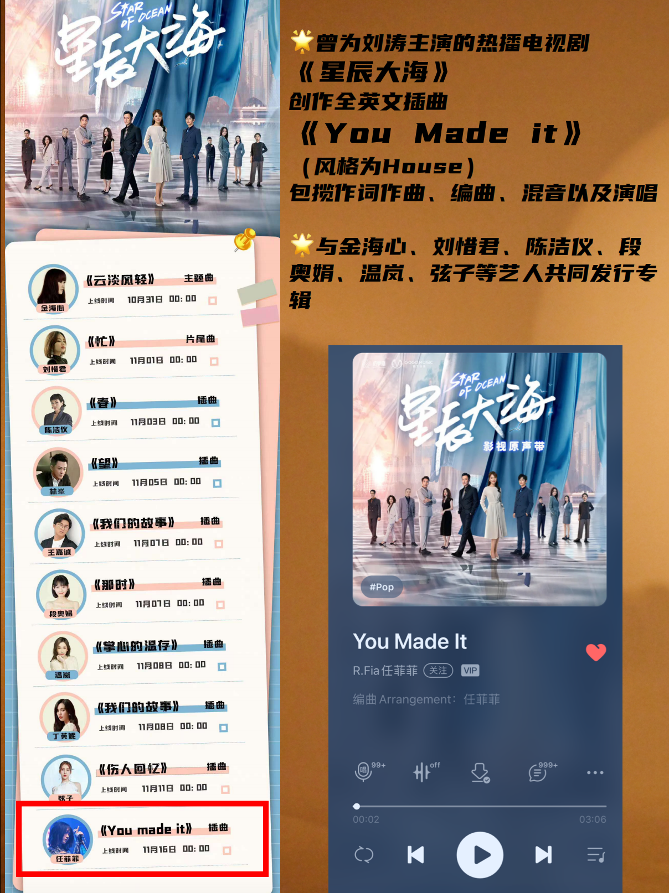
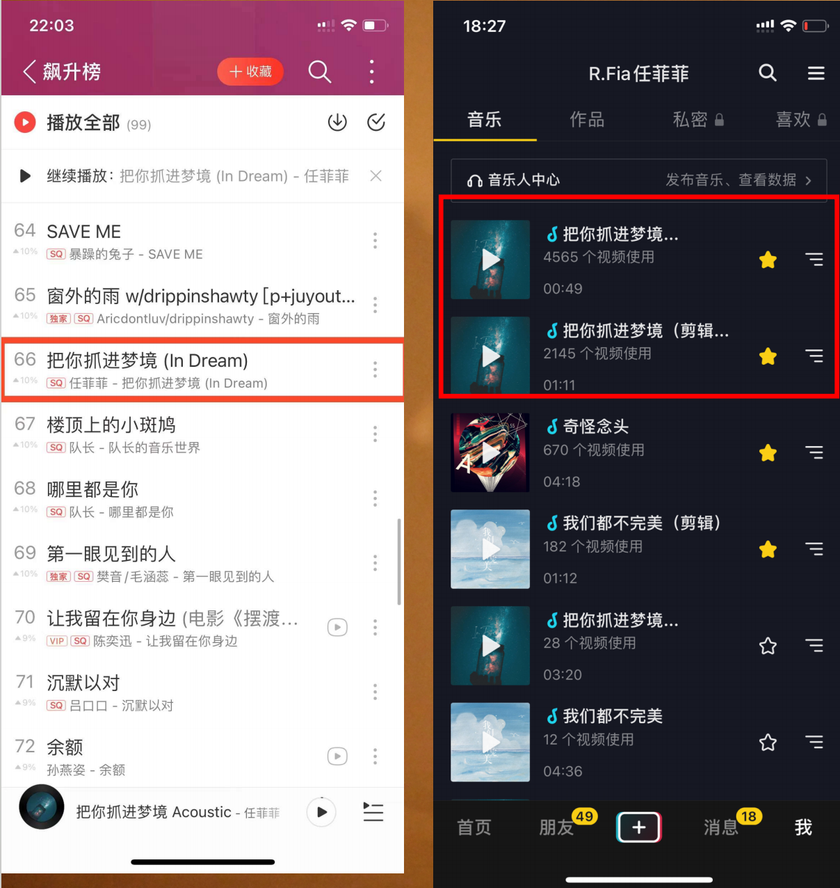
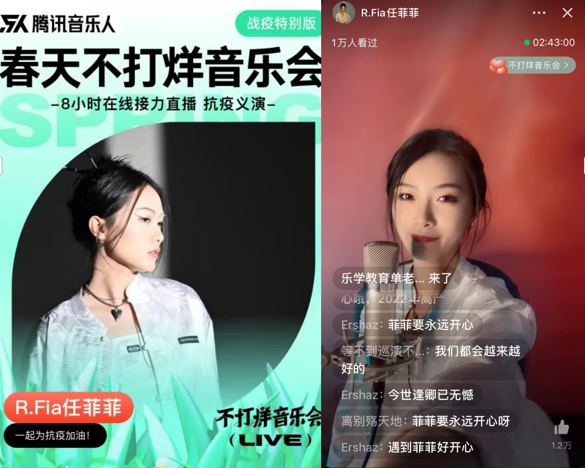
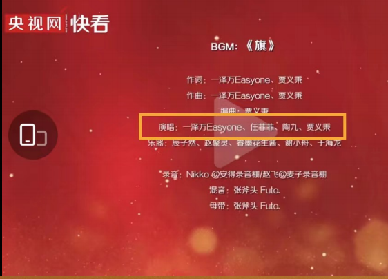
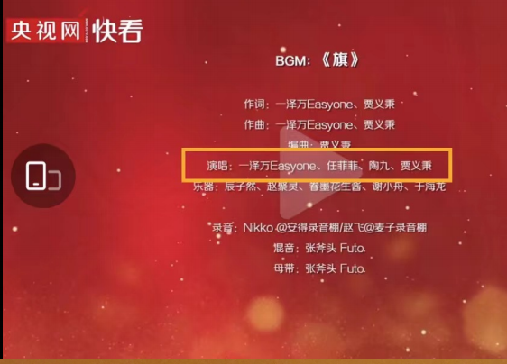

Basic Information
Feifei Ren (R.Fia) is a singer-songwriter and electronic music producer, a talented independent musician skilled in singing, songwriting, and electronic music production. She has released over 20 original tracks and has also composed and produced music for various film and television OSTs, as well as for other artists.
Specializing in writing and producing music in various styles, including electronic, pop, Guofeng (Chinese-style), and rock. While adopting advanced international music production techniques, she has frequently experimented with integrating electronic music and cyberpunk aesthetics with traditional Chinese culture, resulting in unique Guofeng electronic works.
With an ethereal voice, exquisite melodies, and visually evocative arrangements, everything comes together to create R.Fia's distinctive personal style.
| Name | FeiFei Ren | Music Genres | Electronic, Pop, Guofeng (Chinese-style), Rock, etc. |
|---|---|---|---|
| Stage Name | R.Fia | Signature Style | Melodic Dubstep, Guofeng Electronic, House, Cyberpunk |
| Gender | Female | Nationality | China |
| Common Platforms | QQ Music, NetEase Cloud Music, Weibo | Identity | Singer-songwriter, Electronic Music Producer |
| Collaborating Artists | Zhiqian Xue, Song Xu, Wenjie Shang, Fangdongdemao, Jiawei Li, Zi Yang, Xijun Liu, etc | Representative Works | 《红楼雨》《What's your fantasy》《Can I be with you》 |
| Graduated University | New York University | Height | — |
Representative Works
《红楼雨》 (Crimson Pavilion in Rain) It's a piece I composed and produced, blending traditional Chinese instruments like the pipa and xiao with modern electronic music. The lyrics are written in classical Chinese, and the story takes place in ancient times— during a war, a husband goes off to battle, while his wife waits for him at home. But in the end, they’re forever separated by fate. Through this song, I wanted to express the beauty and sadness of love, distance, and longing. It’s also my way of bringing Chinese poetry and emotion into a
Listen to the song on Spotify
《What's your fantasy》 I wrote it during a low point in my life, when I felt lost and stuck. But even then, I realized—we all have a little fantasy inside us. Some are big, some are small. Some feel close, some feel far away. Some might seem impossible, but some are right in front of us. Maybe it’s watching the stars by the sea, or holding someone you love. Maybe it’s chasing your own sky, or just going home to be with family. When we feel down or alone, these little fantasies give us the strength to keep going. Because no matter how tough life gets, there’s always something beautiful to hold on to.
Listen to "What's Your Fantasy" on Spotify
《Can I Be With You》 Can I Be With You is a cross-border collaboration between me and a Korean musician. I wrote the lyrics and composed the melody. The song explores the quiet ache of restrained love — the kind where emotions run deep, yet are never fully expressed. It’s about two people who feel something powerful, but choose to hold back. Because sometimes, we’re told that mature love means self-control, or even letting go. Like the ocean, calm on the surface but turbulent underneath, this song captures the inner storm of unspoken feelings — the longing to be together, the fear of getting hurt, and the heartbreak of turning away while still in love. It’s a song about tenderness, distance, and the kind of love that leaves behind a gentle, lasting sorrow.
Listen to "Can I Be With You" on Spotify
《海底星空》"海底星空" is the promotional song for the movie Lost in the Stars (Chinese: 消失的她) . The song was written and composed by R.Fia, arranged by Manjie Babycloth, and performed by Janice Man. It was released on July 2, 2023. Lost in the Stars is a 2022 Chinese mystery film. The film premiered at the Hainan International Film Festival on 25 December 2022 and was released theatrically in China on 22 June 2023.
Listen to "海底星空" on Spotify
《You Made It》It is an English OST created and performed by R.Fia (Ren Feifei) for the hit drama The Starry Sea starring Liu Tao. The track features a House style, with lyrics, composition, arrangement, mixing, and vocals all completed solely by her, showcasing her comprehensive music creation and production abilities. She has also collaborated with many well-known artists such as Jin Haixin, Liu Xijun, Kit Chan, Duan Aojuan, Landy Wen, and Xian Zi, contributing to album releases and earning wide recognition in the mainstream music industry.
《再见完美主义》 It is R.Fia (Ren Feifei)'s first full-length original album, released in 2021 (English title Goodbye Perfectionist). The album includes a total of 9 tracks, featuring a diverse yet cohesive musical style, showcasing her creative depth in electronic and pop music. The album was co-produced by her and top-tier domestic musicians, including Liu Zhuo, and received unanimous acclaim from both music critics and listeners, further solidifying her professional standing among independent musicians.

《把你抓进梦境》 It is R.Fia (Ren Feifei)'s pop-electronic EP, which quickly gained popularity after its release. Over 6,000 Douyin (TikTok China) users selected it as background music for short video creations, sparking a platform-wide trend. The work also climbed the NetEase Cloud Music Rising Chart, becoming one of her iconic hits and further cementing her influence in the electronic pop genre.
Performance Experience
- I have held performances at Beijing Mao Livehouse, School Livehouse, Jianghu Livehouse, and Jc.box Livehouse.
- I have performed alongside Vava and Manshuk at Shanghai Mao Livehouse.
- I was a performing guest at the "New Zealand Film Festival Closing Ceremony."
- I was a performing guest at the "Asia Music Festival" Media Appreciation Reception.
- I was invited by the Kenya National Tourism Board to star in and film the "Kenya Official Tourism Promotional Video" in Africa.
Other Experiences
During the recurring pandemic in the spring of 2022, Tencent Music Entertainment Group launched a large-scale public welfare online concert project.——《春天不打烊音乐会》，The aim was to convey warmth and hope to the public through music and boost morale in the fight against the pandemic. The concert brought together numerous talented musicians with diverse styles and featured public welfare performances via online livestreams, providing ongoing companionship and spiritual solace to audiences staying at home.
As a highly regarded independent electronic musician，R.Fia Feifei Ren was invited to participate in this charity concert, representing the unique voice of contemporary female electronic creators on the public welfare stage. During the livestream, I performed some of my signature works, delivering a highly immersive and healing performance with vivid electronic arrangements and an ethereal voice. My music seamlessly blends Oriental aesthetics with cyberpunk elements, making it one of the highlights of the evening.
This livestream was broadcast through QQ Music, 全民K歌, and Kugou Music and other platforms simultaneously，with a total audience of over 10,000 viewers.，The live chat and comment sections were buzzing with interactions, with many viewers commenting, "Listening to her music feels like traveling to a futuristic Orient" and "This is the first time I've been moved by electronic Chinese-style music."
R.Fia's performance on the charity stage not only showcased her musical professionalism and live performance charisma but also reflected her sense of social responsibility as a public figure, further enhancing her influence and recognition among younger audiences.

 

R.Fia Ren Feifei was invited to participate in the annual special project "If We Wrote 2021 as a Song" launched by China Media Group. This project aimed to reflect on the societal changes and the emotions of the times in China over the year through the form of music, bringing together several representative musicians to collectively compose a musical memory of the year for the people.
In this project, R.Fia performed her original song 《旗》 — a piece that not only showcased her signature ethereal and delicate vocal style but also conveyed a profound expression of unity, faith, and the spirit of the times through its lyrics and melody. The song, with its grand yet warm arrangement, evoked a deep resonance among listeners, reflecting the intertwining experiences of the pandemic, perseverance, and hope.
As a representative of the new generation of independent musicians, R.Fia's participation not only added a distinctive electronic touch to the entire project but also reflected her cross-genre integration and her music creation philosophy, which balances artistic expression and social responsibility.